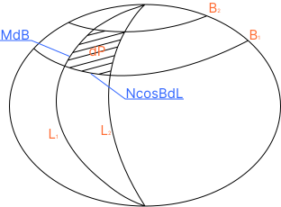

ВЫЧИСЛЕНИЕ ПЛОЩАДИ И РАЗМЕРОВ РАМОК СФЕРОИДИЧЕСКОЙ ТРАПЕЦИИ
Методика определения площади и размеров рамок сфероидической трапеции заданного масштаба по геодезическим координатам точки
Сфероидическая трапеция — это геометрическая фигура на поверхности земного эллипсоида, ограниченная двумя меридианами и двумя параллелями.
При решении некоторых специальных задач в геодезии требуется знать площади и размеры рамок сфероидических трапеций. Например, при построении съёмочной трапеции необходимы размеры сторон рамок, а при определении объёмов съёмочных работ — площади трапеций того или иного масштаба. Учитывая, что съёмочные трапеции до масштаба 1:2000 включительно ограничены меридианами и параллелями, задача сводится к вычислению размеров сторон и площадей сфероидических трапеций.
Основой международной разграфки является лист карты масштаба 1:1 000 000, который представляет собой сфероидическую трапецию, ограниченную меридианами с разностью долгот 6° и параллелями с разностью широт 4°.
Площадь сфероидической трапеции вычисляется на основе интегрирования элементарной площади. Для бесконечно малой трапеции, ограниченной бесконечно близкими меридианами и параллелями:

Точная формула площади
После интегрирования и преобразований получается строгая формула для вычисления площади сфероидической трапеции:
где b — малая полуось эллипсоида, e — первый эксцентриситет, L — долготы в радианной мере, B — широты, W — первая сфероидическая функция.
Приближённая формула площади
Для практических вычислений часто используется разложение подынтегрального выражения в ряд по степеням эксцентриситета с последующим почленным интегрированием:
Формулы (1) и (2) являются универсальными: они позволяют вычислять не только площади сфероидических трапеций, но и площади сфероидических поясов, заключённых между двумя параллелями, площадь полусфероида или всей поверхности эллипсоида вращения.
Размеры рамок трапеции вычисляются на основании формул длин дуг меридианов и параллелей с учётом знаменателя масштаба съёмочной трапеции m.
где N₁, N₂ — радиусы кривизны первого вертикала для широт B₁ и B₂; Mср — радиус кривизны меридиана по средней широте; ρ″ = 206264,8062″ — число секунд в радиане; m — знаменатель масштаба.
Диагональ d вычисляется для контроля правильности графического построения рамок трапеции на карте.
-
Определить номер шестиградусной зоны. По долготе L точки вычислить номер зоны n = целое(L / 6) + 1 и долготу осевого меридиана зоны L₀ = 6n − 3.
-
Определить координаты рамок трапеции. По координатам точки и заданному масштабу определить геодезические широты B₁, B₂ и долготы L₁, L₂ южной, северной, западной и восточной рамок трапеции согласно схеме разграфки.
-
Определить номенклатуру листа. Определить обозначение листа карты по международной разграфке (например, О-39-79-Б для масштаба 1:50 000).
-
Вычислить площадь трапеции. Используя формулу (1) или (2), вычислить площадь сфероидической трапеции в км².
-
Вычислить размеры рамок. По формулам для a₁, a₂, c′ и d определить размеры сторон и диагонали рамки трапеции в сантиметрах на карте.
Для масштаба 1:50 000 сфероидическая трапеция ограничена параллелями с разностью широт 10′ и меридианами с разностью долгот 15′.
Основой международной разграфки является лист карты масштаба 1:1 000 000, который ограничен меридианами с разностью долгот 6° и параллелями с разностью широт 4°.
Обозначение листа 1:1 000 000
Обозначение листа масштаба 1:1 000 000 состоит из буквы ряда и номера колонны. Например, лист, заключённый между широтами 56° и 60° и долготами 48° и 54°, имеет обозначение О-39.
Разделение на листы более крупных масштабов
Каждый лист масштаба 1:1 000 000 делится на листы более крупных масштабов по определённой схеме:
| Масштаб | Разность широт | Разность долгот | Количество листов | Обозначение |
|---|---|---|---|---|
| 1:1 000 000 | 4° | 6° | 1 | О-39 |
| 1:500 000 | 2° | 3° | 4 | А, Б, В, Г |
| 1:200 000 | 40′ | 1° | 36 | I — XXXVI |
| 1:100 000 | 20′ | 30′ | 144 | 1 — 144 |
| 1:50 000 | 10′ | 15′ | 4 | А, Б, В, Г |
| 1:25 000 | 5′ | 7′30″ | 4 | а, б, в, г |
| 1:10 000 | 2′30″ | 3′45″ | 4 | 1, 2, 3, 4 |
Обозначение листа любого масштаба строится путём последовательного добавления к обозначению листа 1:1 000 000 соответствующих обозначений при каждом делении.
Пусть требуется вычислить площадь и размеры рамок сфероидической трапеции масштаба 1:50 000, в пределах которой расположена точка с координатами:
1. Определение координат рамок
Для масштаба 1:50 000 лист ограничен параллелями с разностью широт 10′ и меридианами с разностью долгот 15′. Определим координаты рамок трапеции:
2. Определение номенклатуры
Лист 1:1 000 000: ряд О (56°—60°), колонна 39 (48°—54°) → О-39
Лист 1:100 000: №79 → О-39-79
Лист 1:50 000: четверть Б → О-39-79-Б
3. Вычисление площади
Используя формулу (1) или (2) для эллипсоида Красовского (a = 6 378 245 м, e² = 0,0066934216), получаем:
4. Вычисление размеров рамок
Вычислив радиусы кривизны N₁, N₂ и Mср и подставив в формулы для a₁, a₂, c′ и d, получаем:
Полученные размеры соответствуют ожидаемым: стороны трапеции на карте масштаба 1:50 000 составляют приблизительно 30 × 37 см, что является стандартным размером листа для данного масштаба.